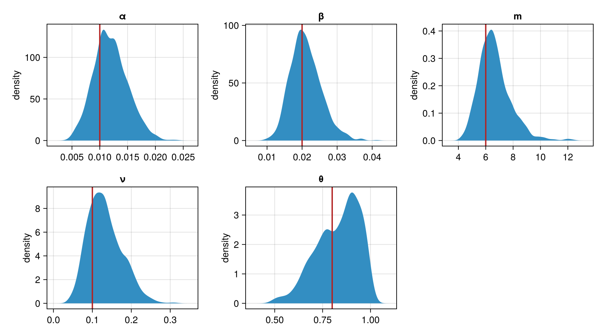

Fitting a latent-trajectory epidemic model
In this tutorial we simulate capture-recapture data from a two-state susceptible/infected epidemic and recover the model parameters, using EpidemicTrajectories.jl for the epidemic model and PracticalBayes.jl for inference.
The model is the two-state model of Touloupou et al. (2019): each animal is either susceptible or infected, and moves between the two states at each time step. There is no recovered compartment — an infected animal recovers back to susceptible and can be reinfected. We observe an imperfect diagnostic test on a subset of days, and we never observe the infection state directly.
We will:
- simulate a herd trajectory and imperfect test data,
- write the model with EpidemicTrajectories' rate functions,
- sample the parameters (with NUTS) and the hidden trajectory (with an iFFBS kernel) jointly, and
- plot the posterior against the values we simulated from.
using EpidemicTrajectories
using PracticalBayes
using Distributions
using Random
using AdvancedHMC: NUTS
import AbstractMCMC
using StableRNGs: StableRNG
using Statistics: mean
using FlexiChains
using CairoMakiePrecompiling packages...
2066.7 ms ✓ Distributions → DistributionsDensityInterfaceExt
2563.2 ms ✓ AbstractPPL → AbstractPPLDistributionsExt
2641.0 ms ✓ StatsFuns → StatsFunsChainRulesCoreExt
2948.4 ms ✓ MCMCDiagnosticTools
3238.9 ms ✓ Distributions → DistributionsChainRulesCoreExt
6315.3 ms ✓ Bijectors
1360.9 ms ✓ Bijectors → BijectorsForwardDiffExt
15742.6 ms ✓ FlexiChains
1675.1 ms ✓ FlexiChains → FlexiChainsAdvancedHMCExt
2467.1 ms ✓ PracticalBayes
10 dependencies successfully precompiled in 23 seconds. 153 already precompiled.
Precompiling packages...
2365.8 ms ✓ KernelDensity
206719.1 ms ✓ Makie
65244.4 ms ✓ CairoMakie
3 dependencies successfully precompiled in 275 seconds. 285 already precompiled.
Precompiling packages...
6670.0 ms ✓ DimensionalData → DimensionalDataMakieExt
1 dependency successfully precompiled in 8 seconds. 292 already precompiled.
Precompiling packages...
6037.4 ms ✓ FlexiChains → FlexiChainsMakieExt
1 dependency successfully precompiled in 6 seconds. 323 already precompiled.Simulate the data
First we simulate a herd of ten pens of eight animals over eighty days, from a known set of parameters: the external and within-pen forces of infection $\alpha$ and $\beta$, the mean infectious period $m$, the initial infection frequency $\nu$, and the test sensitivity $\theta$.
true_pars = (; α = 0.01, β = 0.02, m = 6.0)
true_ν = 0.10
true_θ = 0.80
n_pens, n_per_pen, n_times = 10, 8, 80
n_ind = n_pens * n_per_pen
group = repeat(1:n_pens; inner = n_per_pen)
ss = SI
rates = TwoStateSI()
rng = StableRNG(2024)
states, data = simulate_trajectory(rng, ss, rates, true_pars, group,
[1 - true_ν, true_ν]; n_times = n_times)([0 0 … 0 0; 0 0 … 0 0; … ; 0 0 … 1 1; 0 0 … 1 1], (states = [0 0 … 0 0; 0 0 … 0 0; … ; 0 0 … 1 1; 0 0 … 1 1], group = [1, 1, 1, 1, 1, 1, 1, 1, 2, 2 … 9, 9, 10, 10, 10, 10, 10, 10, 10, 10], members = EpidemicTrajectories.var"#members#43"{Dict{Int64, Vector{Int64}}}(Dict(5 => [33, 34, 35, 36, 37, 38, 39, 40], 4 => [25, 26, 27, 28, 29, 30, 31, 32], 6 => [41, 42, 43, 44, 45, 46, 47, 48], 7 => [49, 50, 51, 52, 53, 54, 55, 56], 2 => [9, 10, 11, 12, 13, 14, 15, 16], 10 => [73, 74, 75, 76, 77, 78, 79, 80], 9 => [65, 66, 67, 68, 69, 70, 71, 72], 8 => [57, 58, 59, 60, 61, 62, 63, 64], 3 => [17, 18, 19, 20, 21, 22, 23, 24], 1 => [1, 2, 3, 4, 5, 6, 7, 8]…))))We apply an imperfect test (sensitivity $\theta$, perfect specificity) on every sixth day, and mark the other days as unobserved with -1.
rams = DiagnosticTest(; sensitivity = p -> p.θ, specificity = p -> 1.0, positive_code = 1)
R = simulate_observations(rng, (rams,), (; θ = true_θ), ss, states)[1]
observed_days = 1:6:n_times
Rmask = fill(-1, size(R))
Rmask[:, observed_days] .= R[:, observed_days]80×14 view(::Matrix{Int64}, :, 1:6:79) with eltype Int64:
0 0 0 0 0 0 1 1 1 0 0 0 0 0
0 0 1 0 0 0 1 0 1 0 0 0 0 0
0 0 0 0 0 0 0 1 1 0 0 0 0 0
0 0 0 0 1 1 0 0 0 0 0 0 0 0
0 0 0 1 1 1 0 0 0 0 0 0 0 0
0 0 0 0 1 1 0 0 0 0 0 0 0 0
0 0 0 0 0 0 0 0 0 0 0 1 0 0
0 0 0 0 1 0 0 0 1 0 0 0 0 0
0 0 0 0 0 0 0 0 0 0 1 1 0 0
0 0 0 0 0 0 0 0 0 1 0 0 0 0
⋮ ⋮ ⋮
0 0 0 0 0 0 0 0 0 0 0 0 0 0
1 0 0 0 0 0 0 0 0 0 0 0 0 0
0 0 0 0 0 0 0 0 0 1 1 1 1 0
0 0 0 0 0 1 0 0 0 1 0 0 0 0
0 1 0 0 1 1 1 0 0 0 0 0 0 0
0 0 1 0 0 0 1 1 0 0 0 0 0 0
0 0 1 0 0 0 0 0 0 0 0 0 0 0
0 1 0 0 0 0 0 0 0 0 0 1 1 1
0 0 0 1 0 0 0 0 0 0 0 0 0 1Bundle the model and data
EpidemicTrajectories works in three parts: model (the parameters), X (the latent trajectory), and data (the observations plus the group structure). epidemic_model captures the fixed structure — the state space, the rates, the tests — and returns loglik(model, X, data), simulate(rng, model, data), and latent!(rng, model, X, data). build_data bundles the observations and group membership once.
em = epidemic_model(ss, rates; tests = (rams,))
data = build_data(em, group; observations = (Rmask,))EpidemicData{Vector{Int64}, EpidemicTrajectories.var"#members#77"{Dict{Int64, Vector{Int64}}}, Tuple{Matrix{Int64}}, Nothing}([1, 1, 1, 1, 1, 1, 1, 1, 2, 2 … 9, 9, 10, 10, 10, 10, 10, 10, 10, 10], EpidemicTrajectories.var"#members#77"{Dict{Int64, Vector{Int64}}}(Dict(5 => [33, 34, 35, 36, 37, 38, 39, 40], 4 => [25, 26, 27, 28, 29, 30, 31, 32], 6 => [41, 42, 43, 44, 45, 46, 47, 48], 7 => [49, 50, 51, 52, 53, 54, 55, 56], 2 => [9, 10, 11, 12, 13, 14, 15, 16], 10 => [73, 74, 75, 76, 77, 78, 79, 80], 9 => [65, 66, 67, 68, 69, 70, 71, 72], 8 => [57, 58, 59, 60, 61, 62, 63, 64], 3 => [17, 18, 19, 20, 21, 22, 23, 24], 1 => [1, 2, 3, 4, 5, 6, 7, 8]…)), ([0 -1 … 0 -1; 0 -1 … 0 -1; … ; 0 -1 … 1 -1; 0 -1 … 1 -1],), nothing, 80, 80)Reserve the hidden trajectory as a latent variable
The hidden state matrix X (animals × time) is a latent variable the sampler fills in. We represent it as a matrix-valued distribution so PracticalBayes treats it as one discrete latent block, updated by our own kernel rather than by NUTS. Its density comes from em.loglik in the model body, so the distribution itself contributes nothing.
struct TrajectoryLatent <: Distributions.DiscreteMatrixDistribution
n_ind::Int
n_times::Int
end
Base.size(d::TrajectoryLatent) = (d.n_ind, d.n_times)
Distributions.logpdf(::TrajectoryLatent, X::AbstractMatrix) = 0.0
Distributions.rand(rng::Random.AbstractRNG, d::TrajectoryLatent) = zeros(Int, d.n_ind, d.n_times)The iFFBS latent kernel
The kernel resamples the whole hidden trajectory once per Gibbs sweep with a single call to em.latent!.
struct iFFBSKernel <: PracticalBayes.AbstractLatentKernel end
function PracticalBayes.latent_step(rng, ::iFFBSKernel, block_names, c::ModelConditional)
pars = (; α = c.values.α, β = c.values.β, m = c.values.m̃ + 1.0, θ = c.values.θ)
X = copy(c.values.X)
em.latent!(rng, pars, X, data; initial_prob = [1 - c.values.ν, c.values.ν])
return (; X = X)
endThe initial infection frequency $\nu$ and the test sensitivity $\theta$ have closed-form conditional posteriors, so we update them with small conjugate kernels rather than NUTS.
struct NuKernel <: PracticalBayes.AbstractLatentKernel end
function PracticalBayes.latent_step(rng, ::NuKernel, block_names, c::ModelConditional)
x1 = @view c.values.X[:, 1]
n_inf = count(==(1), x1)
return (; ν = rand(rng, Beta(1 + n_inf, 1 + length(x1) - n_inf)))
end
struct ThetaKernel <: PracticalBayes.AbstractLatentKernel
results::Matrix{Int}
end
function PracticalBayes.latent_step(rng, k::ThetaKernel, block_names, c::ModelConditional)
X, R = c.values.X, k.results
n_pos = n_inf = 0
for t in axes(R, 2), i in axes(R, 1)
(R[i, t] < 0 || X[i, t] != 1) && continue
n_inf += 1
R[i, t] == 1 && (n_pos += 1)
end
return (; θ = rand(rng, Beta(1 + n_pos, 1 + n_inf - n_pos)))
endThe model
The parameters get priors; the hidden trajectory is the latent variable; and the trajectory log-likelihood is added with @addlogprob! em.loglik(pars, X). We reparameterise the infectious period as $m = \tilde m + 1$ so the recovery probability $1/m$ stays below one.
@model function cattle_model(em, data, n_ind, n_times)
α ~ Gamma(1, 1)
β ~ Gamma(1, 1)
m̃ ~ Gamma(2, 4)
m := m̃ + 1.0
ν ~ Beta(1, 1)
θ ~ Beta(1, 1)
X ~ TrajectoryLatent(n_ind, n_times)
@addlogprob! em.loglik((; α = α, β = β, m = m, θ = θ), X, data)
endcattle_model (generic function with 1 method)Sample
We assign each variable to a block: NUTS for the continuous transmission parameters, the conjugate kernels for $\nu$ and $\theta$, and the iFFBS kernel for the hidden trajectory.
m = cattle_model(em, data, n_ind, n_times)
spl = Gibbs(
(:α, :β, :m̃) => NUTS(0.8),
:ν => NuKernel(),
:θ => ThetaKernel(Rmask),
:X => iFFBSKernel(),
)PracticalBayes.Gibbs{Tuple{PracticalBayes.GibbsBlock{AdvancedHMC.NUTS{Float64, Symbol, Symbol}, Tuple{Symbol, Symbol, Symbol}}, PracticalBayes.GibbsBlock{Main.NuKernel, Tuple{Symbol}}, PracticalBayes.GibbsBlock{Main.ThetaKernel, Tuple{Symbol}}, PracticalBayes.GibbsBlock{Main.iFFBSKernel, Tuple{Symbol}}}}((PracticalBayes.GibbsBlock{AdvancedHMC.NUTS{Float64, Symbol, Symbol}, Tuple{Symbol, Symbol, Symbol}}((:α, :β, :m̃), AdvancedHMC.NUTS{Float64, Symbol, Symbol}(0.8, 10, 1000.0, :leapfrog, :diagonal)), PracticalBayes.GibbsBlock{Main.NuKernel, Tuple{Symbol}}((:ν,), Main.NuKernel()), PracticalBayes.GibbsBlock{Main.ThetaKernel, Tuple{Symbol}}((:θ,), Main.ThetaKernel([0 -1 … 0 -1; 0 -1 … 0 -1; … ; 0 -1 … 1 -1; 0 -1 … 1 -1])), PracticalBayes.GibbsBlock{Main.iFFBSKernel, Tuple{Symbol}}((:X,), Main.iFFBSKernel())))We start the hidden trajectory from a plausible simulation, then sample runs the sweeps and returns a chain; discard_initial drops burn-in.
X0, _ = simulate_trajectory(StableRNG(99), ss, rates, true_pars, group,
[1 - true_ν, true_ν]; n_times = n_times)
init = (; X = copy(X0), α = 0.05, β = 0.05, m̃ = 4.0, ν = 0.1, θ = 0.7)
chn = AbstractMCMC.sample(StableRNG(7), m, spl, 1000;
init = init, n_adapts = 400, discard_initial = 500)╭─FlexiChain (1000 iterations, 1 chain) ───────────────────────────────────────╮
│ ↓ iter = 1:1000 │
│ → chain = 1:1 │
│ │
│ Parameters (6) ── Symbol │
│ Float64 α, β, m̃, ν, θ │
│ Matrix{Int64} X (80, 80) │
│ │
│ Extras (0) │
│ (none) │
╰──────────────────────────────────────────────────────────────────────────────╯Check the recovery
We compare the posterior means to the values we simulated from. The infectious period is $m = \tilde m + 1$.
posterior_m = vec(chn[:m̃]) .+ 1.0
recovered = (α = vec(chn[:α]), β = vec(chn[:β]), m = posterior_m,
ν = vec(chn[:ν]), θ = vec(chn[:θ]))
truths = (α = true_pars.α, β = true_pars.β, m = true_pars.m, ν = true_ν, θ = true_θ)
for name in (:α, :β, :m, :ν, :θ)
println(rpad(name, 3), " mean ", round(mean(getfield(recovered, name)); digits = 4),
" (truth ", getfield(truths, name), ")")
endα mean 0.012 (truth 0.01)
β mean 0.0211 (truth 0.02)
m mean 6.6391 (truth 6.0)
ν mean 0.1319 (truth 0.1)
θ mean 0.8299 (truth 0.8)Plot
We plot each parameter's posterior density with a line marking the value we simulated from.
fig = Figure(size = (900, 500))
for (i, name) in enumerate((:α, :β, :m, :ν, :θ))
ax = Axis(fig[fldmod1(i, 3)...]; title = string(name), ylabel = "density")
density!(ax, getfield(recovered, name))
vlines!(ax, [getfield(truths, name)]; color = :firebrick, linewidth = 2)
end
fig
Each posterior concentrates around the value we simulated from — the sampler has recovered the transmission parameters, the infectious period, the initial infection frequency, and the test sensitivity, all while inferring the hidden infection trajectory it never observed directly.
This page was generated using Literate.jl.